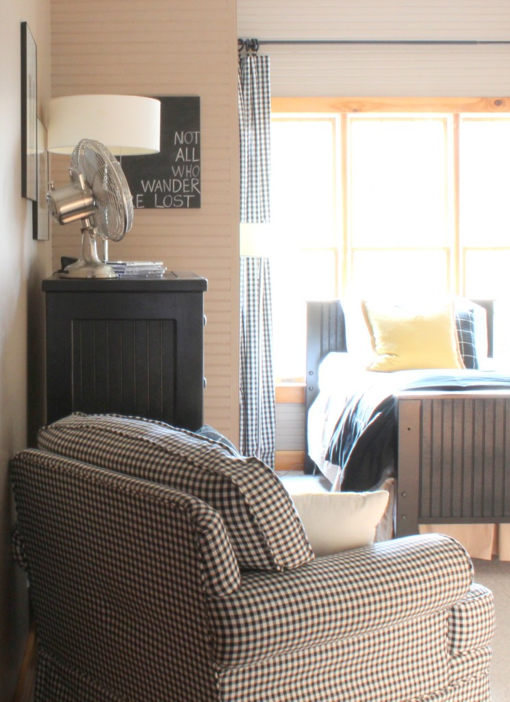

.png)
.PNG)
.PNG)
.PNG)
.PNG)
.PNG)
.JPG)
.JPG)
.PNG)
.PNG)


Everything around here seems to be a domino effect. Â I truly had no plans to redo my daughter’s room at all (even though it had been in its latest state for more than 7 years.) Â But the black checked chair in the boys’ room needed another parking spot so that there would be room for larger beds in there.

After searching the entire house, the only place it could go was in my daughter’s bedroom…but that meant a total rearrangement of the furniture in there. Â And of course, if you are going to all the trouble of rearranging the furniture, you could just go ahead and repaint, right? (Especially since daughter had been asking that the polka dots and red walls be changed.) Â You might remember those walls from the Christmas Snow post…
the bunk beds
 the window at Christmas
the window at Christmas
Her bedroom is visible from the family room (and the dining room and the kitchen..), and I really think rooms should flow visually through sight lines. Â So I had to think about what would work – not only in there – but also in the view from other rooms. Â And it had to work with that chair that she was adopting. Â That was asking a lot.
One day I was looking at the comforters on the Pottery Barn website and remembered loving a particular pattern from Christmas. Â I checked, and amazingly, it was marked waaaaay down – but they only had 1 twin size in stock.

That was what I needed to finally get the plan going in there.  Unfortunately, there were no shams available either, but I thought perhaps Ebay could help me with that.  So I ordered the one comforter from Pottery Barn, and it came.  I love the red paisley print, and the reverse with its assorted red typography is gorgeous, too.  All of this was to be a surprise for my daughter when she came home from college, but she came home one weekend too early, and I had to show the linens to her.  (She loved them, too.)
Okay, that’s enough of the back story. Â Are you ready to see the finished room? Â Â As I mentioned, the furniture had to be rearranged so that there would be wall space for the chair.

I had planned to use the black and white gingham drapes from the boys’ bedroom, but they just did not look good from the family room.  So I ordered some of the same panels in a different color from Country Curtains.  My plan had been to sew pom pom fringe on them, but it really looked too juvenile when I held it up with them.  (My daughter wanted a room that was a little more grown up.) So the fringe plan came to a halt. I tried them on the rod with the clip on rings, but that looked kind of plain…so I came up with sewing red ribbon ties to the top from which to hang them.  They worked well and added a needed punch of color.


Here are the bunk beds.  For the nonexistent shams and the other comforter, I bribed my sons to go to the Pottery Barn Outlet for me when they were headed to North Georgia for a backpacking trip.  The outlet did not have any shams, but they did have the king size comforter marked down lower than the low price I had paid for the twin.  So I had them pick up one of the comforters, and I made shams and the other comforter from it.

With the remaining part of the comforter I made basket liners for the desk baskets, a seat cushion for the desk chair, and recovered the cork board with the typography print. Â (I took the fabric apart, and removed the batting inside…and there is still a yard or two of the prints left.)


And here is the black and white checked chair that started the whole changing of the room. Â I think it would be lovely if it were recovered in that typography fabric..so if I run across another comforter at a great price, I just might have to take it apart to have some more fabric for that project.

My daughter likes her new room – especially having that lamp in the area by her bed. (Oh and there are rails for the upper bunk. Â I just have them stored in the closet until she has an overnight guest to use them.)

We still haven’t put away everything from her first year of college..guess that is what summer vacation is for.  I finished the decorating plan for the room over the garage today.  Hallelujah!  (But it is nothing like what I thought I was going to do up there. 🙂 )  And I am still mulling over how to do the boys’ room. Decisions…decisions!  At least daughter’s room is mostly done.  I hope you enjoyed the little virtual tour of it.
until next time..
*  update with sources for you  *
(And you do know that when it says custom it means I did it….we are major diy-ers. 🙂 )


.PNG)
you said the bunk beds were pottery barn? I couldn’t find where you said those were from.
I have been wanting some just like that!
———————————————————————
Sorry, Stephanie. The bunkbeds are not Pottery Barn…the linens are. I purchased those beds on a close-out special from a local furniture store. (I don’t even remember the name of the brand.) The beds were an ivory color when we purchased them, and I painted them white. They are very similar to the Catalina bunkbeds at PBKids. http://www.potterybarnkids.com/products/catalina-bunk-bed/?pkey=dbunk-beds& Good luck finding the beds you want!
Kelly
I love that room! You did an amazing job in your daughter’s bedroom. The red motif is really beautiful and girly with a hint of sexiness. Every piece of furniture matched the wall paint and that’s awesome. Can’t wait to see more of your redo.
Kelly – I love your daughter’s room!!! I’m starting to look at getting furniture for my daughter (she is still in a crib). Can you tell me where you found the furniture for your daughter? I like the white painted look ….as it sounds like you do too. 🙂
Thanks! Sarah
———————————————————–
Sarah, I am so glad you like our daughter’s room decor. I bought the white pieces all separately..at separate times. The desk was purchased at Sam’s Club as an entertainment piece in the playroom. It was an assemble-it-yourself and finish-it-yourself piece. The dresser and bed were both purchased at a local furniture store (not together though). I changed out their small knobs for larger ones on the dresser. The bunkbeds were a closeout deal and were ivory when we got them. Obviously I painted them white. Sounds like you have some time to look and find what you like, but it doesn’t hurt to start now. I believe the dresser was the first thing we bought.
Kelly
I just discovered your blog through a pin. May I move in, please?! lol! Beautiful, beautiful home. Thanks for sharing.
———————————————————————
Sure thing, BJ! You will have to stay in the boys’ room though, because daughter comes home every couple of weekends from college. 🙂 Glad you found the blog!
Kelly
You did a fantastic job on the room..I so love the PB bedding…I did not see that pattern…Just beautiful…I am sure she loves spending time in that room!
I love it, Kelly! I especially like the red and white, but I am such a sucker for that combo! 🙂 We have just painted our girls’ room with Sea Salt from Sherwin Williams, and we are in the process of deciding about painting some furniture and nailing down a choice on bedding, accent colors, etc. My 13yo has certain ideas, but she has to get them by her (almost) 22yo twin sisters who share the room when they are home from college. Needless to say, it gets interesting around here when decorating ideas are tossed around…or shot down. LOL
You have lovely taste! Thanks for sharing.
Blessings,
Amy
Well, you know I’m loving it! The red and white paisley comforters are perfect! You did a great job Kelly!
Love, love, love this. I love this room (and your whole house for that matter!). I say leave the chair as-is, but use the typography fabric (that I know you will find!) to make curtains (which I think would look better than the beige gingham).
My favorite thing for years has been to buy extra sheet sets and comforters to make curtains pillows etc. It’s such a bargain and (obviously) really customizes the room. I only can do that with discontinued patterns. My whole bedroom is a long-ago discontinued Ralph Lauren pattern that I’ve pieced together via Marshalls and ebay over the years.
Beautiful job!
Her room looks beautiful, great job as usual. You know how I love red and that print is amazing and goes great with the rest of your house. Isn’t that the way, you change out one thing and then you have the snowball effect. But isn’t that why we do what we do, couldn’t live where things stay the same for years. Thanks for sharing.
I love everything you do and this room is no exception! I wish you could come work your magic in my house!
Amazing! That room gives me food for thought. There appears to be some sewing in my future!
Oh, Kelly, how cute this room turned out! I love all the extra touches of color and the addition of the taupe and the black and white checks. So fresh and fun, I know your daughter just loves it! Thanks for sharing it.
Kelly,
Wow, you’ve been busy. The room looks so great. It seems you’ve achieved the “grown up” room and yet it suits a college age person. I can see why your daughter loves her new room, great job.
Karen
Hey Kelly, I love every detail! So glad you were able to find that extra queen size to make all the cute little touches. Amanda
What an amazing and talented gal you are! Oh, and an inspiration too!
The room looks wonderful. More grown up, comfy, and functional. I love the chair in there and don’t blame her if she wants an ottoman! I’d never want to leave that room if it were mine!
I once made a similar curtain treatment for my living room except after I sewed the ribbons on the curtains, I tied them to the curtain rings. I had to be able to pull them open and closed easily and it helped to have them on the rings.
I love your blog!
Looks great! So bright and cheery!
I love the new room…..the colors are so you! I’m not sure if I’d put an ottoman in there….she might not come out until she goes back to school in the fall! LOL
I love the black & white chair. It looks so comfy and inviting in her bedroom. It gives a nice balance to all of the red in the bedroom. You did a great job!
Gotta love that “Domino effect”! It looks fabulous Kelly! You are so talented with decorating, maybe there is another career waiting for you?
Looks great! College age kids are kind of hard to decorate for. Don’t you think? You want it to be grown up but at the same time they still feel like your kid. 🙂
What a perfect update to her room. Love that print!
Oh and to have your talent to make the shams, basket liners, etc.
I wish! 🙂
You did very well.
Kelly,
Made a change to my posts and I took Thursdays and added it to later tomorrow. I need to make up my mind on paint color sooner rather than later if you have time to help me out. If not…no worries. Thanks.
Kelly
Love the tie detail on the curtains! Just the right amount of punch! I have thought about trying out the curtains from Country Curtains. What do you think of the quality?
Kelly, I love what you did with the room. If you have a chance this week to check out my blog I have 3 posts, but Thursdays post is where I am asking for help. I usually have a visual on what color to paint a room but here I am at a loss. If you have time, any ideas would be appreciated, thanks.
What a lovely room and you are “sew” talented to use that comforter for material!!
Kelly,
You are amazing! This room is like a magazine. My son is in the process of moving home from his first year of college, and I had hoped to fix up his room a little. I’m kind of stumped on what to do! I wish you could come fix up his room 🙂
I LOVE LOVE LOVE that black checked chair, where did you get that? The room is beautiful, as is your entire home.
What a sweet room, so fashionable yet cozy. Those CC curtains are one of my favorites, I sigh over them every time a catalog comes in the mail. I was going to use them in both our guest bedrooms, flash forward seven years and the wood blinds are still the only window dressing in there. Am tired just thinking of all you are getting done around your house (and teaching full time). You are, indeed, a decorating inspiration to the rest of us!
Kelly, I love this room makeover. Cute cute bedding and I wish I liked to sew. I love how you dismantled a comforter to make shams, liners, and chair covers. I have those same drapes in the green.
What a beautiful room Kelly! I love the colors and mix of patterns and fabrics. So charming and cozy, LOVE your style!
———————————————————————
Lauren – I appreciate your sweet words about the room! It does feel quite cozy in there…especially with that arm chair in there now.
Kelly
Kelly,
AMAZING! I wouldn’t change a thing. Love the black/white checkered chair – gives balance to the room. Your color sense is exquisite.
What is the name/number of the curtain panels from Country Curtains? Would love to order the black/white ones for our breakfast nook.
I am amazed at what you accomplish – being a working mom outside the home …
Have a great day and thanks so much for your inspiring posts.
Monika
———————————————————————
Monika – Glad you liked the “recycled†room! I will post sources in my next post, but the name of the drapery panel is Cabin Check. They also have a larger checked version too – called Buffalo check. It is a heavier weight fabric than the one I have. I will line those panels this summer when I have more time…until then they will just have to do!
Kelly
WOW, what a difference paint makes. The room looks twice the size. Great fabrics! I love how you have the beds made, they look great.
You are one talented girl! I hope your kids realize how lucky they are to have such a smart Mom who can do anything.
Looking forward to the room over the garage pictures.
By the way, what color are the walls?
———————————————————————-
Mary – Doesn’t the paint open it up? I really like the lighter version, too. You are so kind to leave such nice comments here. 🙂 I will try to list sources in my next post. The can of paint is up in the room over the garage right now, and I can’t remember the full name of it. (We were testing it out up there, but it looked a little too pink in that light.)
Kelly
Kelly the room looks stunning – not that it didn’t before – I like the Check chair in there too.
Colleen
————————————————————————-
Colleen – Thank you for the compliments on both versions of the room! When my daughter’s best friend saw the room for the first time she said that she needed a chair like that in HER room, too. Every room needs a big comfy chair, doesn’t it?
Kelly
Hi Kelly, The room came out lovely! You have such great style!
———————————————————————-
Anne – You are so sweet to always leave such kind comments! Thank you for dropping by to see daughter’s room.
Kelly
I was hoping to end my day and now as I notice the clock– another day has begun :)– with a posting from you!! Oh my, oh my word! How I LOVE your sweet girl’s new LOOK for her bedroom! It truly is so chic– just perfect for a young lady in college!! Thank you for sharing and inspiring! Nite! Nite! From Holly and me!
————————————————————————
Louvina – Thank you for your sweet comment before you turn in for the night! Both daughter and I think the room turned out pretty good, too. (She’ll definitely take it over red with white polka dots!) Glad you approve. 🙂
Kelly
Nothing is better than red mixed with black and white checks and plenty of painted white furniture….great choice and it must make her feel so welcome when she comes home.
——————————————————————–
Deb – You are so right about mixing the red with the black and white check. I love painted white furniture…practically all painted furniture! You certainly have some pretty pieces on your website. Thanks for visiting!
Kelly
Her room looks great Kelly! I love the red and white comforter. That was super smart to use the comforter for other projects around the room. I need you to teach me how to make the chair cushions – I’m going to do something like that in my kitchen!
———————————————————————–
Kayleigh – Those red and white comforters were a steal! When PB has a clearance sale, it is usually very good. I will be glad to help you with your cushions for your new kitchen! How fun to be decorating your first home. 🙂
Kelly
Your daughters room looks great. She is lucky to have such a talented Mom. Kelly you always amaze me. Where do you find the time and energy to do all the things you accomplish. Your daughter has a great roll model to follow .Love the red comforters from pottery barn.you got some really good deals.I like the black an white chair with every thing else in the room.Beautiful cozy room. Yarlette
————————————————————————
Yarlette – So glad you like the room! Don’t let the posts fool you. I am so sloooow at getting things done around here! It has taken me forever to finish the plan for the room over the garage. My husband has been asking for a paint color and light fixtures for several weeks now. Hopefully that room will take off now that decisions have been made. (I was trying really hard to stay away from the temptation of “trendy.”) Thank you for leaving your kind words here.
Kelly
I Love love love what you have done! Really like the fabric with the checked chair. A fantastic make over…
———————————————————————–
Marlene – Thank you for the compliments on the room! You always leave such thoughtful comments. 🙂 I forgot to mention that daughter really likes having a comfy chair in there…now she is asking for an ottoman!
Kelly